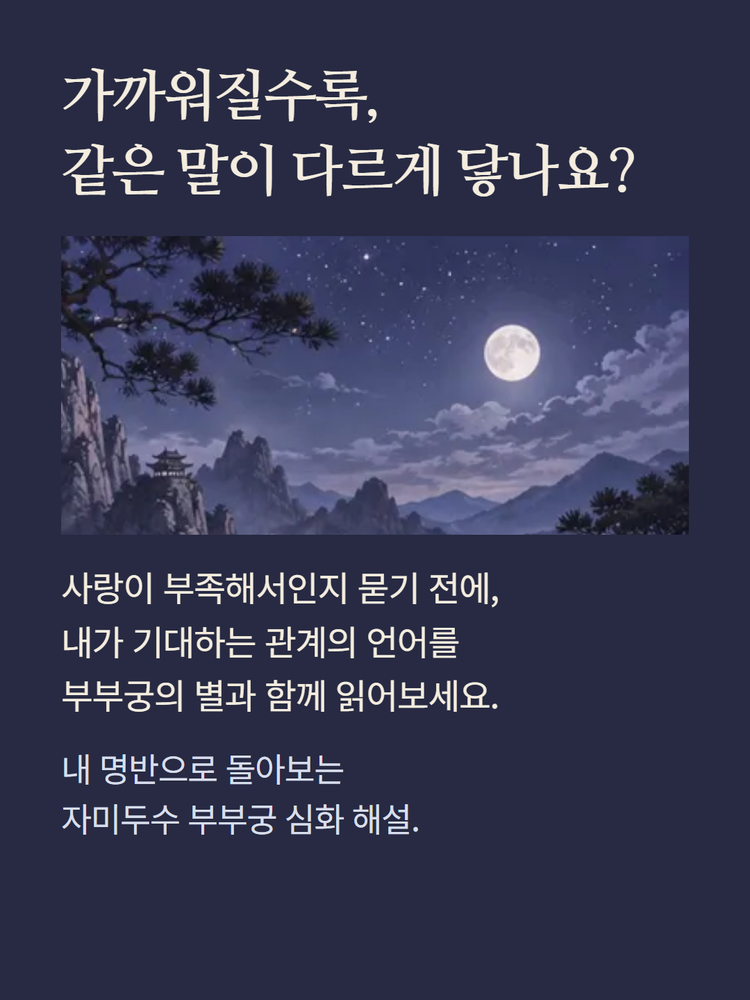
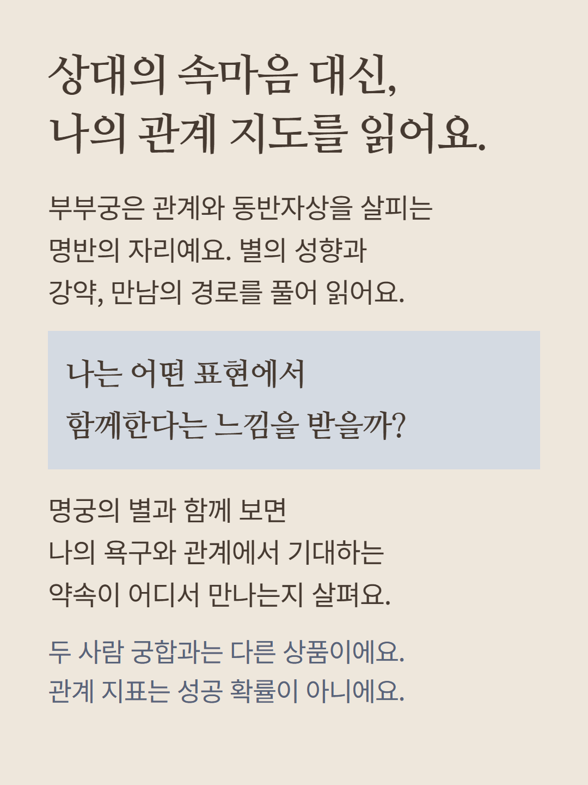
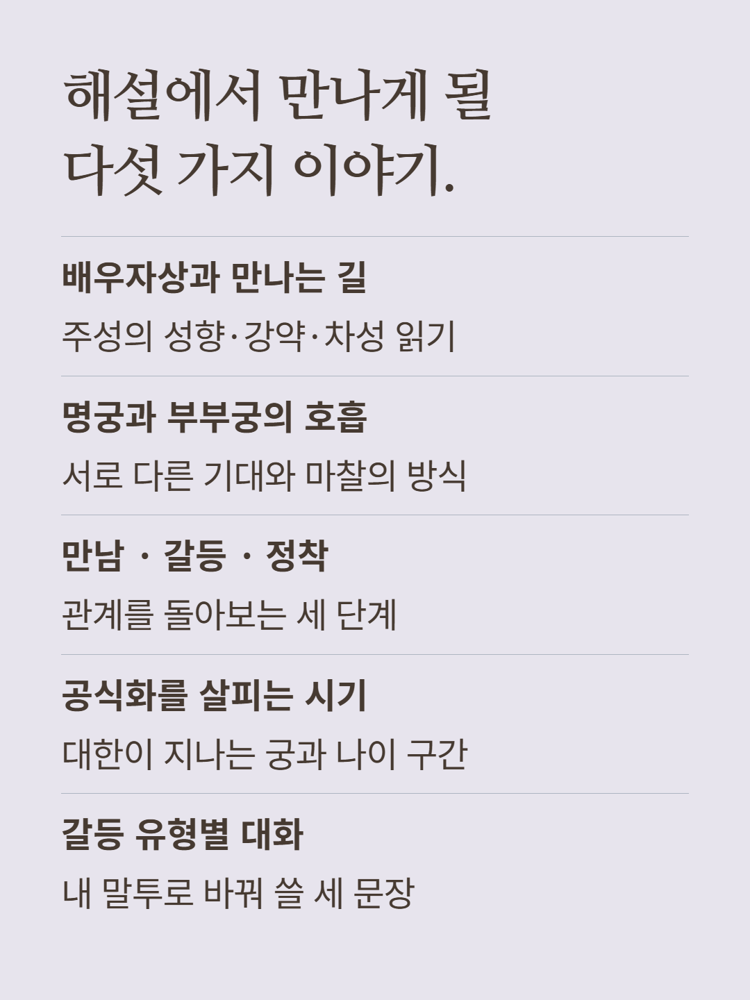
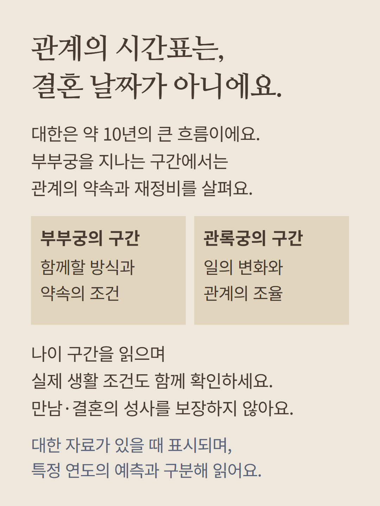
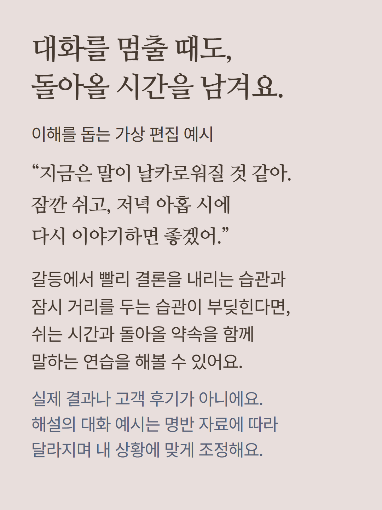
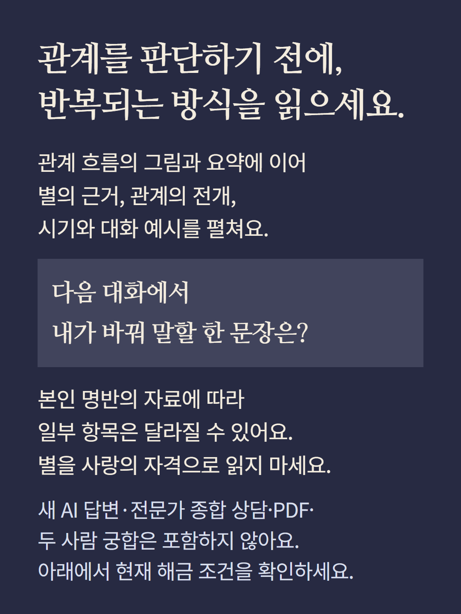

본인의 기본 명반을 이용하는 정적 관계 해설입니다. 관계 흐름의 내부 지표·보조 그림과 인연유입·정착·주의 안내,관계 방식·끌림반복·조율·공식화·실천문장·마음회복 코칭에 이어 부부궁의 주성 성향·강약·차성과 배우자상·만남의 경로,조건이 맞을 때 명궁과 부부궁의 호흡,만남·갈등·정착 시나리오,대한 자료에 따른 부부궁·관록궁 나이 구간,갈등 유형별 대화 예시를 제공합니다. 자료에 따라 항목이 생략되거나 공궁 설명으로 달라집니다. 지표의 백분율은 내부 참고값이며 관계 성공 확률이 아닙니다. 상대의 명반을 계산하는 두 사람 궁합이나 상대 속마음의 사실 확인이 아닙니다. 대한은 약10년의 큰 구간이며 결혼 날짜·재회·성공을 보장하지 않습니다. 새 AI 답변·전문가 종합 상담·PDF·별도 궁합은 포함하지 않습니다. 예시는 이해를 돕는 가상 편집이며 실제 결과나 고객 후기가 아닙니다. 이미지는 분위기 연출이며 실제 명반이 아닙니다. 현재 해금 조건을 확인해 주세요.